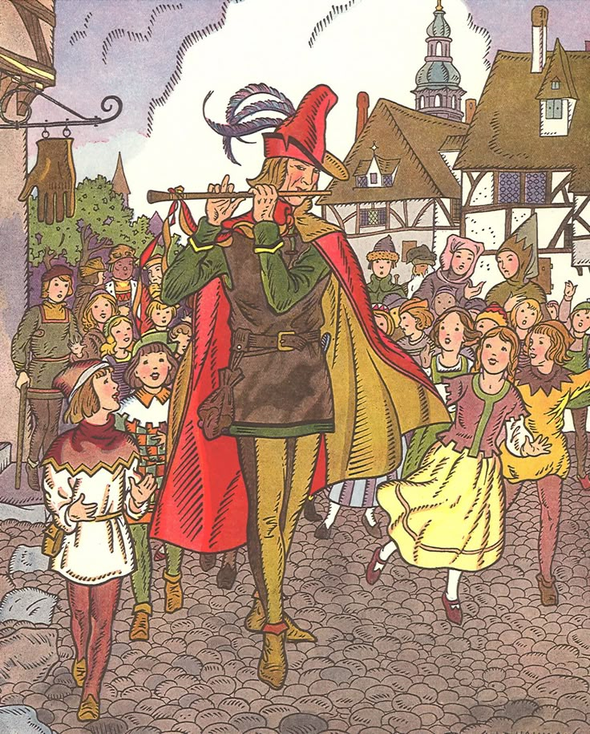

¿Qué sucedió?
El flautista de Hamelín es una leyenda de origen alemán que narra la historia de un hombre misterioso que llegó al pueblo de Hamelín y prometió librarlo de una plaga de ratas a cambio de una recompensa. Según el relato, utilizó su flauta para atraer a las ratas y alejarlas del pueblo. Cuando los habitantes se negaron a pagarle, el flautista regresó y tocó su instrumento para atraer a los niños, quienes lo siguieron hasta desaparecer. Aunque estos acontecimientos se cuentan como una historia fantástica, existe una antigua tradición histórica relacionada con la desaparición de jóvenes de Hamelín.
La historia se sitúa en Hamelín, una ciudad de la actual Baja Sajonia, Alemania. La fecha tradicional del acontecimiento es el 26 de junio de 1284, durante la Edad Media.

Lo que está documentado
La ciudad de Hamelín conserva una tradición histórica sobre la desaparición de sus jóvenes en 1284. Existen referencias antiguas a esta historia y registros de una representación medieval del flautista y los niños en una vidriera que desapareció siglos después. Con el paso del tiempo, la narración incorporó elementos como la plaga de ratas y la venganza del flautista. Sin embargo, no todos estos detalles están respaldados por pruebas históricas.
Lo que aún no se sabe
No se conoce con certeza qué ocurrió realmente con los jóvenes mencionados en la tradición. Algunas hipótesis sugieren que pudieron participar en una migración hacia territorios de Europa oriental, mientras que otras interpretaciones consideran posibles accidentes u otros acontecimientos. Ninguna explicación ha sido demostrada definitivamente. Tampoco existen pruebas concluyentes de que un flautista utilizara poderes sobrenaturales para atraer a los niños.
